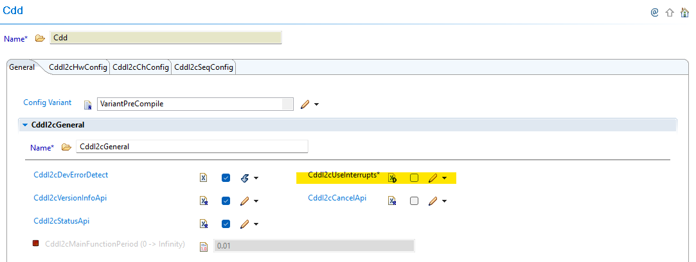
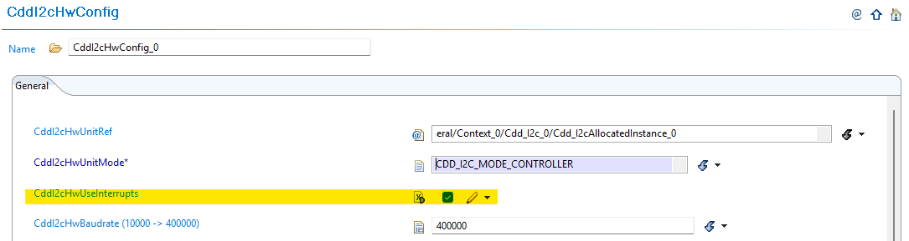

6.14. CDD I2C Module Migration
Migration Approach: Follow sequential migration for clear understanding of changes at each version. Each migration is organized by individual changes with description, old vs new comparison, and migration actions.
6.14.1. v01.03.00 (i.e release v26.00.00) from v01.01.00 (i.e release v01.04.01) Migration
6.14.1.1. Summary
Version v01.03.00 introduces I2C target (slave) mode support and restructures the interrupt/polling configuration from a global setting to per-HW-unit control:
Per-HW-Unit Interrupt Configuration: The global
CddI2cUseInterruptsflag is replaced by a per-HW-unitCddI2cHwUseInterruptsparameter, allowing each I2C instance to be independently configured for polling or interrupt mode.Cdd_I2c_PollingModeProcessing()Removed: Polling is now integrated intoCdd_I2c_MainFunction(); the standalone polling processing API is removed.
6.14.1.2. Change 1: Per-HW-Unit Interrupt/Polling Configuration
6.14.1.2.1. Description
Previously, interrupt or polling mode was selected globally for all I2C HW units through a single CddI2cUseInterrupts boolean in the CddI2cGeneral container. In v01.02.00, this global flag is removed. Each HW unit now has its own CddI2cHwUseInterrupts parameter inside its CddI2cHwConfig entry.
Additionally, the generated macros are updated: two separate macros (CDD_I2C_POLLING_MODE and CDD_I2C_INTERRUPT_MODE) are now generated based on whether any HW unit is in polling or interrupt mode respectively.
6.14.1.2.2. Old vs New Configuration
Parameter |
v01.01.00 |
v01.02.00 |
|---|---|---|
Location |
|
|
Scope |
All HW units share one setting |
Each HW unit configured independently |
Generated Macro Changes:
Macro |
v01.01.00 |
v01.02.00 |
|---|---|---|
|
|
|
|
Not generated |
|
|
Not generated |
|
|
Not generated |
|
6.14.1.2.3. Migration Actions
Open your I2C configuration in EB Tresos.
Navigate to
CddI2cGeneraland note the current value ofCddI2cUseInterrupts(true= interrupt mode,false= polling mode).Remove
CddI2cUseInterrupts— this parameter no longer exists.Navigate to each
CddI2cHwConfigentry for your configured HW units.Set
CddI2cHwUseInterruptson each HW unit to match your previous global setting:If old
CddI2cUseInterrupts = true→ setCddI2cHwUseInterrupts = trueon each unitIf old
CddI2cUseInterrupts = false→ leaveCddI2cHwUseInterrupts = false(default) on each unit
Update application code: Replace any
#if (STD_ON == CDD_I2C_POLLING_MODE)guards with the new equivalent. Logic is the same but note thatCDD_I2C_INTERRUPT_MODEis now also available.Regenerate configuration.
{kind=link}

Fig. 6.60 v01.01.00: CddI2cGeneral showing global CddI2cUseInterrupts parameter
{kind=link}

Fig. 6.61 v01.02.00: CddI2cHwConfig showing per-unit CddI2cHwUseInterrupts parameter
6.14.1.3. Change 2: Cdd_I2c_PollingModeProcessing() Removed
6.14.1.3.1. Description
The Cdd_I2c_PollingModeProcessing() API has been removed. In v01.01.00, this function was used to process pending I2C transfers when interrupts were disabled. In v01.02.00, polling processing is handled internally by Cdd_I2c_MainFunction() (available when CDD_I2C_CONTROLLER_ACTIVE == STD_ON).
The service ID previously assigned to this function (CDD_I2C_SID_POLLING_MODE_PROCESSING = 0x0A) has been reassigned to Cdd_I2c_GetStatus().
6.14.1.3.2. Old vs New
v01.01.00 |
v01.02.00 |
|---|---|
|
Removed — use |
|
Removed |
|
|
6.14.1.3.3. Migration Actions
Search your application code for all calls to
Cdd_I2c_PollingModeProcessing().Replace each call with
Cdd_I2c_MainFunction()— this now handles both periodic timeout checking and polling-mode transfer processing for controller mode.Remove any
#if (STD_ON == CDD_I2C_POLLING_MODE)guards previously wrappingCdd_I2c_PollingModeProcessing()calls —Cdd_I2c_MainFunction()is available wheneverCDD_I2C_CONTROLLER_ACTIVE == STD_ON.Verify no code references
CDD_I2C_SID_POLLING_MODE_PROCESSINGnumerically — if so, update to the new service ID assignments.